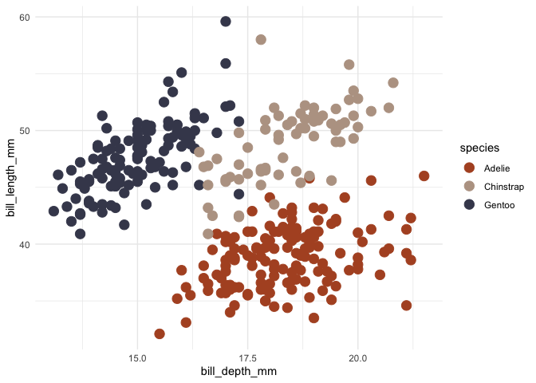
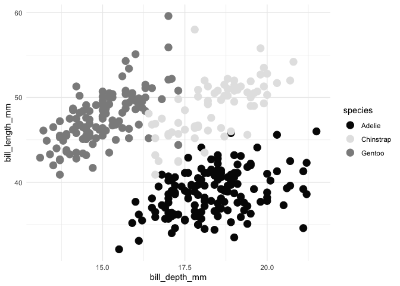
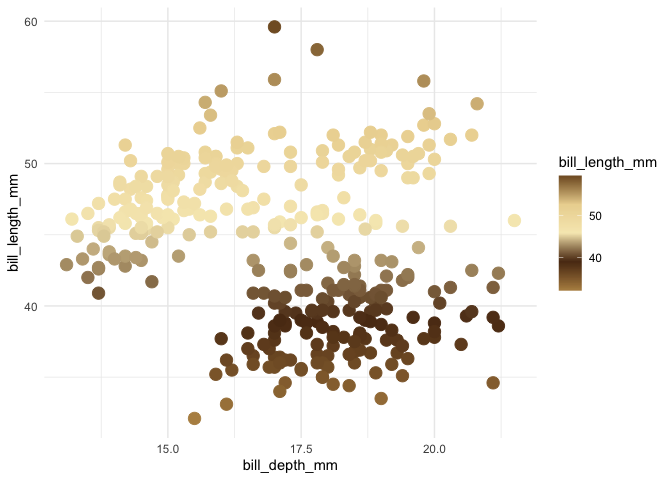
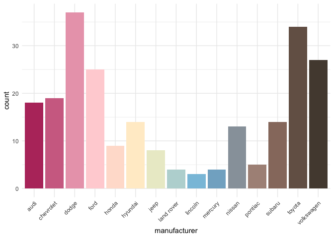
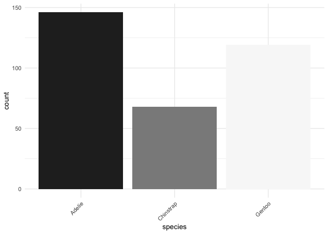

A ggplot2 color palette based on Taylor Swift Album Covers.

The package includes palettes for every full album except for those that Taylor Swift has disavowed.
Installation
You can install the CRAN version of tayloRswift with:
install.packages(c("tayloRswift"))Alternatively, you can install the development version with:
remotes::install_github("asteves/tayloRswift")and load it with
Examples
Color by discrete variable using default palette based on 1989
ggplot(penguins, aes(bill_depth_mm, bill_length_mm, color = species)) +
geom_point(size = 4) +
scale_color_taylor()+
theme_minimal()
Choose a different palette
Reputation works great as a grayscale.
ggplot(penguins, aes(bill_depth_mm, bill_length_mm, color = species)) +
geom_point(size = 4) +
scale_color_taylor(palette = "reputation")+
theme_minimal()
Color by numeric variable
Be content with a palette based on Fearless
ggplot(penguins , aes(bill_depth_mm, bill_length_mm,color = bill_length_mm)) +
geom_point(size = 4) +
scale_color_taylor(discrete = FALSE, palette ="fearless")+
theme_minimal()
Fill by discrete variable
Pop with color from Lover
ggplot(mpg, aes(manufacturer, fill = manufacturer)) +
geom_bar() +
theme_minimal()+
theme(axis.text.x = element_text(angle = 45, hjust = 1)) +
scale_fill_taylor(palette = "lover", guide = "none")
Or if you prefer modern Swift, Folklore
ggplot(penguins, aes(species, fill = species)) +
geom_bar() +
theme_minimal()+
theme(axis.text.x = element_text(angle = 45, hjust = 1)) +
scale_fill_taylor(palette = "folklore", guide = "none")
Palettes

taylorSwift
taylorSwift= “#61b6cc”, “#577f3f”, “#e3e9f3”, “#0a1605”, “#fddac7”, “#81a757”
_(2021_album_cover)_by_Taylor_Swift.png)
fearless
fearless = “#b68f51”, “#5b3617”, “#f7eabe”, “#ecd59f”, “#825c2d”

speakNow
speakNow = “#ffffff”, “#4b2671”, “#5e291c”, “#f3d8c4”, “#f3bf73”

speakNowLive
speakNowLive = “#fce178”, “#969696”, “#871d20”, “#090708”, “#fafaf9”

Red
Red = “#c2c2ae”, “#26233b”, “#7f6557”, “#b4a382”, “#eeeadf”
.png)
taylorRed = “#b1532a”,“#84697f”,“#cbb593”,“#a88f92”,“#e8eadf”,“#43475b”

taylor1989
taylor1989 = “#b1532a”, “#84697f”, “#cbb593”, “#a88f92”, “#e8eadf”, “#43475b”

reputation
reputation = “#060606”, “#6e6e6e”, “#fefefe”, “#cacaca”, “#060606”, “#8c8c8c”

lover
lover = “#b8396b”, “#ffd1d7”, “#fff5cc”, “#76bae0”, “#b28f81”, “#54483e”

folklore
folklore= “#272727”, “#5c5c5c”, “#bababa”, “#f8f8f8”

evermore
evermore = “#3d2620”, “#efefef”, “#827d73”, “#efefef”, “#3d2620”

midnights
midnights = “#586891”,“#8897A4”,“#B3A6A3”,“#2B152C”,“#F1F3F2”
In addition, the package comes with palettes for alternate album covers as well.
midnightsBloodMoon = “#651D32”, “#80433F”, “#BC7B55”, “#AD9291”, “#E9E8E4”
midnightsJadeGreen = “#E8E7E3”, “#CE986B”, “#2F3C30”, “#0B0B08”, “#B98645”, “#8D8C7A”
midnightsMahogany = “#AE9975”, “#2B181F”, “#E2E1DD”, “#948266”, “#AD8E49”
Related Packages
For those who work in Python, it was brought to my attention that there is a very cool package by Josh Borrow called swiftacsmaps.
Other inspirations for this package are the tutorial on creating corporate color palettes by Dr. Simon Jackson, which I drew on heavily. I have long used the wesanderson package by Karthik Ram, which does a similar task.